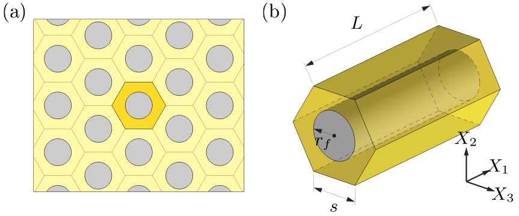

A small-strain areal-confinement formulation for transversely isotropic solids
The numbers behind Section 5 and Appendix B: every virtual test computed for the paper, the effective stiffness it gave, the parameters identified from it and their comparison with the closed-form and hybrid parameter functions. Move the fiber volume fraction on the left; every plot marks the selected configuration.
1Cell and virtual tests
Paper, Sections 3.2 to 3.4 and 5.1

A fiber in a hexagonal periodic cell of edge s = 0.05 and length L = 0.004 along the fiber, meshed with
C3D8RH elements of size h = s/50 (four element layers along the fiber), periodic boundary conditions as
*EQUATION constraints. Each virtual test is a linear perturbation step in ABAQUS/Standard 2024 with the strain amplitude
ε0 = 5×10−4 and gives one column of C.
| Phase | Parameters |
|---|---|
| Matrix, Ogden (N = 3) | μ1 = 1.8729 MPa, α1 = 0.364; μ2 = 7.991 MPa, α2 = 2.7063×10−6; μ3 = −1.8446 MPa, α3 = −0.016588; D1 = 5.6152×10−3 MPa−1 |
| Matrix, Neo-Hooke | C10 = 0.17809 MPa, same D1 (μm = 0.3562 MPa, κm = 1000 μm) |
| Fiber, E-glass | Ef = 72.3 GPa, νf = 0.22 |
| Fiber, carbon | Ef = 228 GPa, νf = 0.30 (idealized as isotropic) |
2Study design
Paper, Section 5.1
A configuration is one cell: one fiber, one matrix and one fiber volume fraction. The study crosses 15 fractions (ρf = 0 to 0.7 in steps of 0.05) with 2 fibers and 2 matrices, which gives 60 configurations. Each runs the six virtual tests of step 1, so 360 FE computations give the 60 stiffness matrices. At ρf = 0 the cell is pure matrix; it is computed in each fiber series. Click a cell to select that configuration.
3Mesh check
Paper, Section 5.1. Carbon fiber, Ogden matrix, seven element sizes from s/12.5 to s/100
Magnitude of the change of each quantity relative to the finest mesh h = s/100, as in the paper. The dashed line is the selected size s/50; finer meshes lie in the shaded region. Halving it changes C11 and γ by at most 0.13 % and C44 by 0.17 %.
4Effective stiffness
Paper, Section 5.2 and Table B.1
Is every C transversely isotropic?
Yes, to numerical accuracy. The table checks the relations a transversely isotropic C must satisfy, as maxima over all fiber volume fractions: eTI measures C22 − C23 = 2C44, ec the components that must vanish and es the deviation from major symmetry, each relative to the diagonal (paper, Sections 3.4 and 5.2). The values of each configuration are in its detail view.
5Identified parameters and closed forms
Paper, Sections 5.3 and 5.4, Table B.2
Dots are the parameters of the proposed model identified from each FE stiffness (λ = C12, μT = C44, μL = C66, γ = C23 − C12, β = C11 − C12 − 4C66 + 2C44); lines are the Hashin–Shtrikman closed forms of Section 4, which have no fitted constant.
6Closed form and hybrid against FE
Paper, Section 5.5
Relative deviation of the closed form (solid) and of the hybrid model, closed form plus neural-network correction (dashed), from the identified parameters. The network corrects μL, μT and γ; λ and β keep the closed form.
All runs
Each row is one configuration; open it for its full stiffness matrix, engineering constants and identified parameters
Data
The results of Section 5 as tables, for reproducing the figures and the identification.
- stiffness.csvEffective stiffness of the 60 configurations and the transverse-isotropy residuals
- parameters.csvParameters identified from FE and their closed-form values, per configuration
- mesh_convergence.csvC11, C22, C44 and γ on the seven meshes of the mesh check
Conventions
- Axes
- 1 along the fiber, 2 and 3 in the plane of isotropy
- Voigt order
- 11, 22, 33, 23, 13, 12
- Shear strains
- engineering, 2εij
- Units
- stiffness and parameters in MPa, lengths in mm